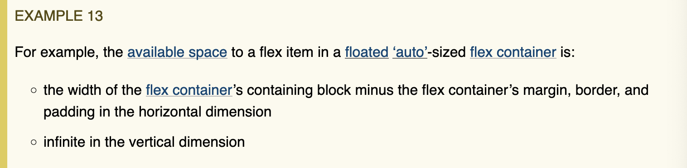

Flex Layout Algorithm
§ 9.2.
Determine the available main and cross space for the flex items.
For each dimension, if that dimension of the flex container’s content box
is a
definite size, use that; if that dimension of the flex container is being sized under
a
min
or
max-content constraint, the available space in that dimension is that constraint; otherwise,
subtract the flex container’s margin, border, and padding from the space
available to the flex container in that dimension and use that value. This
might result in an infinite value.

§ 9.8. Definite and Indefinite Sizes
Although CSS Sizing [CSS-SIZING-3] defines definite and indefinite lengths, Flexbox has several additional cases where a length can be considered definite:
- If a single-line flex container has a definite cross size, the automatic preferred outer cross size of any stretched flex items is the flex container’s inner cross size (clamped to the flex item’s min and max cross size) and is considered definite.
- If the flex container has a definite main size, a flex item’s post-flexing main size is treated as definite, even though it can rely on the indefinite sizes of any flex items in the same line.
- Once the cross size of a flex line has been determined, the cross sizes of items in auto-sized flex containers are also considered definite for the purpose of layout; see step 11.
Note: The main size of a fully inflexible item with a definite flex basis is, by definition, definite.
CSS-SIZING
- definite size
-
A size that can be determined without performing layout; that is, a
<length>
, a measure of text (without consideration of line-wrapping), a size of the initial containing block, or a
<percentage>
or other formula (such the “stretch-fit” sizing of non-replaced blocks [CSS2]) that is resolved solely against definite sizes.
Additionally, the size of the containing block of an absolutely positioned element is always definite with respect to that element.
- indefinite size
- A size that is not definite. Indefinite available space is essentially infinite.
Formatting contexts in which the flex container can participate
- block formatting context (display: block flex; placed in normal flow)
- inline formatting context (display: inline flex; placed in normal flow)
- flex formatting context (display: {block, inline} flex; a flex item regardless of display-outside)
- grid formatting context (display: {block, inline} flex; a grid item regardless of display-outside)